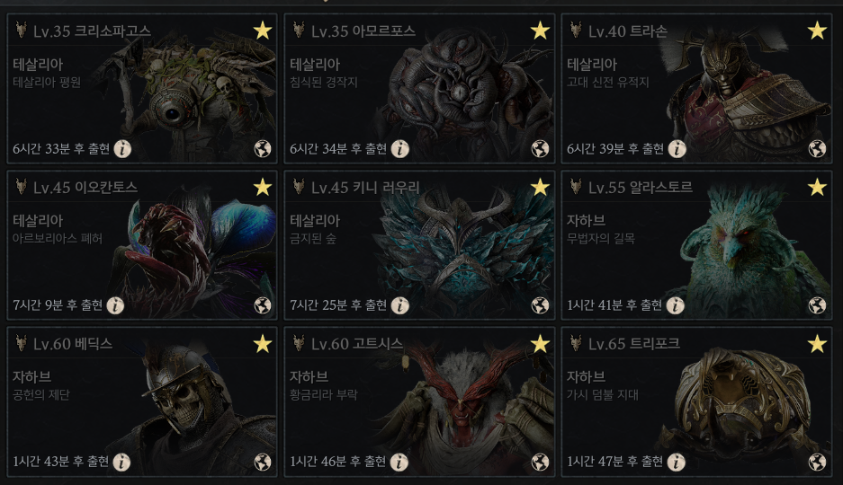

길드 정보를 불러오는 중입니다.
운영 방식
함께 활동하는 길드의 약속
공지사항
길드 일정과 운영 소식
관리자
방문자 통계
일별 방문자
| 날짜 | 고유 방문자 | 추이 |
|---|
주별 방문자
| 기간 | 고유 방문자 | 방문일 합계 |
|---|
주별 고유 방문자는 같은 브라우저의 재방문을 제외합니다. 방문일 합계는 일별 방문자 수를 더한 값으로, 같은 브라우저도 다른 날짜에는 다시 포함됩니다.
한국시간 05:00에 날짜가 바뀝니다. 한 주는 월요일 05:00부터 다음 월요일 05:00까지입니다. 브라우저·기기가 다르거나 저장 정보를 지우면 별도 방문자로 집계될 수 있습니다.
날짜별 방명록
| 작성 시각 | 닉네임 | 메모 |
|---|
방명록 날짜도 한국시간 05:00 기준입니다. 닉네임은 작성자가 입력한 이름이며 본인 인증 기록은 아닙니다.
길드원 참여 현황
길드 콘텐츠 참여 기록
검색 결과가 없습니다.
직업 분포
성장도 분포
분배 기록
회차별 아이템과 낙찰 내역
팁 공유
함께 나누는 공략과 유용한 링크
검색 결과가 없습니다.
공유 알람
출현 3분 전 · 1분간 알림 · 한국 시간
알람 이용 가이드
게임의 콘텐츠 현황판 → 보스 현황판을 스크린샷으로 찍어 클립보드에 복사해주세요.

스크린샷 붙여넣기 → 미리보기 확인 → 확인 → OCR 인식 결과 확인 후 등록
사진을 다시 찍었다면 팝업의 ‘현재 스크린샷으로 갱신’을 눌러주세요. 남은 시간은 사진을 불러온 시각을 기준으로 계산합니다.
수동 등록은 알람 이름을 선택하고 남은 시간을 입력한 뒤 등록을 누르면 됩니다. 같은 이름이 이미 등록되어 있으면 덮어쓰기를 확인합니다.
테스트를 누르면 소리와 토스트를 확인할 수 있습니다. 다시 누르면 중단되며, 테스트 알람은 서버에 저장되지 않습니다.
알람 수신 옆 설정 아이콘에서 알람음과 볼륨을 변경할 수 있습니다. 설정은 현재 브라우저에만 저장됩니다.
공유 알람 상단의 필터 아이콘에서 보스별 수신을 켜거나 끌 수 있습니다. 기본값은 모두 수신이며, 수신을 꺼도 공유 목록에는 그대로 표시됩니다. 필터 설정도 현재 브라우저에만 저장됩니다.
알림 중인 행의 중단 버튼 또는 토스트를 누르면 해당 알람 소리가 멈춥니다. 왼쪽 알람 수신을 Off로 바꾸면 울리던 소리가 모두 꺼집니다.
등록된 알람은 길드원 모두에게 공유됩니다. 출현 3분 전에 1분간 알리며, 심연의 틈은 매일 00:00 · 12:00 · 18:00에 반복됩니다. 사이트를 닫거나 PC가 절전 상태이면 소리가 울리지 않습니다.
컬렉션 기대값 계산기
강화 목표별 비용과 확률
다이아 기준| 목표 | 평균 비용 | 25% 완료1사분위 | 50% 완료중앙값 | 75% 완료3사분위 | 평균 비용 이내성공 확률 | 평균의 2배초과 확률 |
|---|
결과 읽는 법
25%·50%·75%는 비용의 비율이 아니라, 해당 예산 안에 목표 강화에 도달할 확률입니다.
- 25% 완료 비용
- 적어도 25%, 즉 4명 중 1명 수준이 이 금액 이하로 완료할 수 있는 예산입니다. 비교적 운이 좋은 쪽의 비용입니다.
- 50% 완료 비용
- 절반이 이 금액 이하로 완료할 수 있는 중앙값입니다. 긴 실패가 평균을 끌어올리기 때문에 평균 비용과 다를 수 있습니다.
- 75% 완료 비용
- 적어도 75%, 즉 4명 중 3명 수준이 이 금액 이하로 완료할 수 있는 예산입니다. 나머지 최대 25%, 4명 중 1명 수준은 더 많은 다이아를 쓸 수 있습니다.
확률을 인원으로 비유한 것으로, 실제 4명이 시도했을 때 결과를 보장하지 않습니다. 비용은 단계적으로 늘어나므로 해당 예산의 실제 완료 확률은 25%·50%·75%보다 높을 수 있습니다. ≈ 수치는 시뮬레이션 추정입니다.
평균 비용은 같은 조건으로 매우 많이 반복했을 때의 수학적 기댓값입니다. 평균 비용 이내 성공 확률은 총소모 비용이 평균 이하인 상태에서 목표 강화에 도달할 확률입니다. 평균의 2배 초과 확률은 기대보다 훨씬 더 쓸 위험을 보여줍니다. 75% 비용은 최대 비용이 아니며, 실패가 이어지면 그보다 훨씬 많이 쓸 수도 있습니다.
계산 과정과 통계 모델
1. 강화 한 사이클
새 아이템을 습득한 뒤 0강부터 목표까지 강화합니다. 매 시도마다 주문서 1개를 사용하며, 실패하면 아이템이 파괴되어 새 아이템으로 다시 시작합니다. 각 시도는 독립이며, 별도 제작·복구·보호 효과는 포함하지 않습니다.
목표가 n강이고 아이템 비용이 A, 주문서 비용이 B라면 성공한 사이클의 비용은 A + nB입니다. j강에서 실패한 사이클의 비용은 A + jB입니다.
2. 평균과 분산
각 단계의 성공 확률을 곱한 값이 한 아이템으로 목표에 도달할 확률 P입니다. j단계에서 실패할 확률 rⱼ는 이전 단계의 성공 확률을 모두 곱한 뒤 j단계 실패 확률을 곱해서 구합니다.
한 사이클의 비용을 C, 목표를 달성할 때까지의 총비용을 T라 하면 실패한 사이클 뒤에 같은 과정이 독립적으로 반복됩니다.
E[T²] = {E[C²] + 2E[C · 실패 여부]E[T]} / P
Var(T) = E[T²] − E[T]²
평균은 이 식으로 직접 구합니다. 평균 ± 표준편차 배수를 비용 분위수로 사용하는 정규분포 가정은 하지 않습니다.
3. 완료 확률과 분위 비용
총비용이 x 이하일 확률 F(x) = Pr(T ≤ x)를 계산합니다. 25%·50%·75% 완료 비용은 각각 F(x)가 0.25·0.50·0.75 이상이 되는 가장 작은 예산입니다. 평균 비용 이내 성공 확률은 F(E[T]), 평균의 2배 초과 확률은 1 − F(2E[T])입니다.
실패 비용이 한 종류라면 기하분포를 직접 계산합니다. 여러 종류라면 실패 경로별 확률을 비용 단위로 누적하는 재시도 분포 계산을 사용합니다. 동일한 비용에 도달한 경로는 확률을 합산합니다.
m(w) = Σⱼ rⱼ · m(w − 실패 사이클 비용ⱼ)
여기서 w는 마지막 성공 사이클 이전에 소비한 비용입니다. 마지막 성공 사이클 비용을 더하고 확률을 누적해 완료 확률과 분위 비용을 구합니다.
4. 큰 비용의 시뮬레이션 추정
계산에 필요한 비용 상태가 너무 많아지면 100,000회 표본으로 분위수와 초과 확률을 추정합니다. 수십억 번의 실패를 하나씩 실행하는 대신, 첫 성공까지의 실패 횟수가 따르는 음의 다항분포를 직접 샘플링합니다.
Nⱼ | E ~ 포아송분포(E · rⱼ / P)
T = 성공 사이클 비용 + Σⱼ Nⱼ · 실패 사이클 비용ⱼ
같은 E를 조건으로 각 Nⱼ를 독립적으로 추출하면 실제 재시도 과정과 같은 실패 횟수 분포가 됩니다. 이 과정에서도 총비용을 정규분포로 가정하지 않습니다. 표본의 분위수·확률에는 오차가 있으므로 ≈로 표시하며, 평균은 표본 평균이 아니라 앞의 수학적 기댓값을 사용합니다.
난수 생성에는 stdlib 포아송 생성기를 사용합니다. 입력 비용은 0.01 다이아 단위로 계산하며, 같은 조건에서는 같은 표본을 사용해 결과를 재현합니다.
목표 달성까지 필요한 주문서
보유 100개 기준| 도전 구간 | 평균 개수 | 25% 완료운이 좋은 쪽 | 50% 완료중앙값 | 75% 완료여유 있게 준비 | 보유 개수로완료할 확률 | 평균 개수초과 확률 | 평균의 2배초과 확률 |
|---|
몇 개를 모아서 도전할까요?
각 행은 표시된 시작 강화에서 출발해 목표 강화에 처음 도달할 때까지 쓰는 총주문서 개수입니다. 예를 들어 8→9강은 8강에서 시작하며, 7강 이하로 하락했다면 다시 올라오는 주문서도 모두 포함합니다. 다른 행의 개수를 더할 필요는 없습니다.
- 25% 완료 · 운이 좋은 쪽
- 최소 25%, 4명 중 1명 수준이 이 개수 이하로 달성할 수 있습니다. 적은 주문서로 도전하는 기준이지만, 대부분은 더 필요합니다.
- 50% 완료 · 중앙값
- 절반이 이 개수 이하로 달성할 수 있습니다. 평균 개수와는 다르며, 나머지 절반은 더 많은 주문서가 필요할 수 있습니다.
- 75% 완료 · 여유 있게 준비
- 최소 75%, 4명 중 3명 수준이 이 개수 이하로 달성할 수 있습니다. 운이 나쁜 쪽의 최대 25%, 4명 중 1명 수준은 이보다 더 쓸 수 있습니다.
여유 있게 모아서 시도하려면 75% 완료 개수를 준비 기준으로 볼 수 있습니다. 다만 최대 소모량이나 성공 보장은 아닙니다. 평균 초과 확률과 평균의 2배 초과 확률은 긴 하락·복구가 이어질 위험을 보여줍니다.
인원은 확률을 설명하는 비유입니다. 실제 4명의 결과를 보장하지 않습니다. 목표 달성 전 주문서가 떨어지면 시작 강화보다 낮은 상태로 끝날 수도 있습니다. 25%·50%·75%는 해당 완료 확률에 처음 도달하는 정수 개수이며, 실제 완료 확률은 표시된 기준보다 높을 수 있습니다.
등급별 강화 확률표
| 강화 목표 | 상승 | 유지 | 하락 |
|---|
계산 과정과 통계 모델
1. 파괴 없이 상승·유지·하락
제공된 일반·고급·희귀 확률표를 사용합니다. 표의 +8단계는 7→8강 도전에 해당합니다. 한 번 시도할 때 주문서 1개를 쓰며, 상승하면 +1강, 유지하면 같은 단계, 하락하면 −1강입니다. 목표 도달 즉시 계산을 끝냅니다. 보호·확률 보정·천장 효과는 포함하지 않습니다.
2. 수학적 기댓값
현재 i강에서 i+1강까지 올라가는 평균 시도 수를 mᵢ, 상승 확률을 uᵢ, 하락 확률을 dᵢ라 하면 아래 식으로 낮은 단계부터 계산합니다. 하락한 경우 아래 단계에서 돌아오는 시도와 다시 도전하는 시도가 모두 포함됩니다.
mᵢ = (1 + dᵢ · mᵢ₋₁) / uᵢ
3. 주문서 개수별 완료 확률
시작 강화에 확률 1을 두고, 주문서 1개마다 각 단계의 확률을 상승·유지·하락 확률에 따라 다음 상태로 전달합니다. 목표 단계로 넘어간 확률을 누적해 F(n) = Pr(총소모 ≤ n)을 구합니다. F(n)이 25%·50%·75% 이상이 되는 최초의 정수 n이 표의 개수입니다.
평균 초과 확률은 1 − F(⌊평균⌋), 평균의 2배 초과 확률은 1 − F(⌊2 × 평균⌋)입니다. 정규분포를 가정하지 않으며, 무작위 시뮬레이션도 사용하지 않습니다. 미완료 확률이 10⁻¹³ 미만이 될 때까지 누적하며, 부동소수점 계산에 따른 미세한 오차가 있을 수 있습니다.